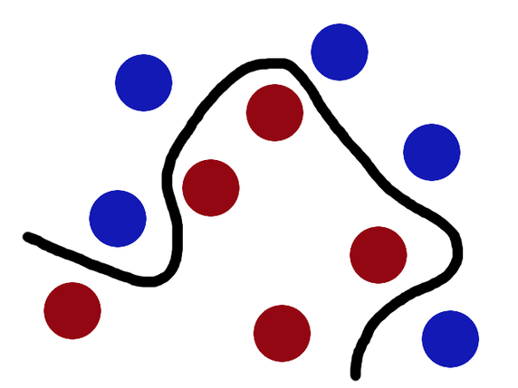

The basic idea of Kernels is the problem of separating randomly distributed data, as shown below:

The separating hyperplane is not exactly a line in this 2D space. So, how can we learn this separation? One trick is to Transform this data by mapping each data point into a new space for computation, learn the separator in that space, and then transform this data back to our original space. This is a similar technique to what we do in the time-frequency transformations of signals using Fourier transforms, to better understand some characteristics in time and frequency domains. The naive way to do this transformation is through a kernel is to the variable x from our initial space to a variable ϕ(x) in the new space. Thus, if this problem is transformed into a linear classification problem in this new space, then we are essentially applying a linear classifier to a non-linear classification problem. The only issue with this is the issue of computation that comes with higher dimensional problems! To alleviate this, we use Kernels
Let's say we have the base features xi and we apply a transformation on them ϕ(xi) which transforms each point according to some set rule. Now, if we were to apply any technique, say linear regression, on the original points, our problem would be to calculate the weights:
w=(XTX)−1XTY
And so, with the transformations, it becomes:
w=(ϕTϕ)−1ϕTY
If we add regularization to it, we just add the ridge regression term to it:
w=(ϕTϕ+λI)−1ϕTY
The problem is, calculating ϕ(x) is hard! And when we look at high volume data and the central role that these transformations might play in the case of SVMs, calculating this transformation for every point just adds complexity. Let's try to simplify this a bit, by looking at our ridge-regressor:
Thus, if we substitute this value in the expression for J(w) , we get a dual form that depends on the α and ϕTϕ , very similar to what we get in the dual form of SVMs. This dot product transformation can be written as a Kernel Matrix:
ϕϕT=K=[ϕ(xi)ϕ(xj)]∀i,j=1,...,N
This matrix has 2 properties:
It is Symmetric → K=KT
It is Positive Semi-Definite → When we multiply it by some other matrix and its transpose, we get a result greater tha or equal to 0 i.e αTKα≥0
When we put this in our simplification term, we get the following result:
α∗=(K+λ′I)−1Y
The difference between the original problem to this problem is simple → Before we had to compute ϕTϕ but now we have to compute K=ϕϕT which seems similar but there is a catch:
According to Mercer's Theorem, any Symmetric and PSD Matrix can be expressed as an inner product
K(x,y)=⟨ϕ(x),ϕ(y)⟩
In other words, we can write K as an inner product of the original features:
ϕϕT=K=[ϕ(xi)ϕ(xj)]=[K(xi,xj)]
This is the Kernel Trick! To better elaborate, let's take a transformation:
ϕ:x→ϕ(x)=[x12(2)x1x2x22]T
A dot product of this transformation can be re-written as
Thus, all we need is this final form of the kernel to work since the whole optimization relies on this dot-product and we don't really need to transform every feature through the original expression! For predictions, originally we needed to calculate the weights since :
y=wTϕ(x)
But, as we have shown these weights depend on the dot-product which can be expressed as a Kernel
wTϕ(x)=y(K+λ′I)−1kx
And to compute this Kernel, we don't need to know the true nature of ϕ(x) ! This is what allows the SVMs to work in higher dimensions.